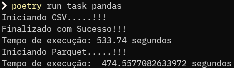
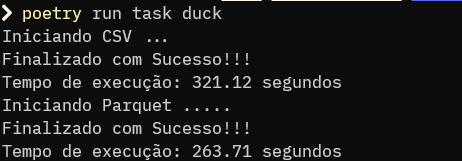

DuckDB x Pandas
Git do Projeto: DuckDb
A ideia do projeto é gerar dados de acordo com o desejo do usuário, para que possamos simular uma situação real de utilização de dados, para tratamento comparando o desempenho do Pandas e DuckDB
Regras de Negócio
Para esse projeto o Gestor solicitou que fosse extraido o resultado do total de vendas, como também total de vendas por produtos e por clientes. Para gerar arquivos nos formatos csv e parquet, destas informações para o time de DataViz poder criar incríveis e infaliveis dashboards.
Estrutura
Basicamente o projeto contém 2 arquivos python, responsáveis pela geração dos dados, e outros arquivos de ETL com python, usando pandas e duckdb;
gerador.py
O arquivo gerador.py é responsável pela função de geração de dados, como também de criação de pastas para armazenar estes dados.
Primeiramente a etapa de importações:
import csv
import os
from random import choice
from faker import Faker
from tqdm import tqdm
Criando Estruturas a serem usadas:
# Criando Dicionário de Produtos
lista_produtos = {
"Computador": 2000,
"Celular Xiaomi": 1000,
"Celular Samsung": 1500,
"Celular Iphone": 5000,
"Monitor": 700,
"Teclado": 50,
"Mouse": 20,
"HeadSet": 100,
"HeadSet JBL": 250,
"Carregador Iphone": 105,
"Carregador Samsung": 80,
"Carregador Xiaomi": 90,
"Carregador Motorola": 100,
"Carregador Nokia": 110,
"PenDrive 4 GB": 20,
"PenDrive 8 GB": 30,
"PenDrive 16 GB": 40,
}
# Criando Lista de Clientes, para ser possível o controle de quantidade de clientes
cliente = []
Iniciando Função de geração:
# Definindo fução para gerar dados
def gerando_dados(
total_linhas: int, total_clientes: int, nome_arquivo: str, tamanho_bloco: int = 100
):
# Invocando a biblioteca faker
falso = Faker()
# Criando Arquivo
with open(nome_arquivo, "w", newline="") as file:
escrever = csv.writer(file)
escrever.writerow(
["Cliente", "Data_Compra", "Produto", "ValorProduto", "Quantidade"]
)
# Definindo Lista aleatória de clientes
for _ in range(total_clientes):
cliente.append(falso.name())
# Criando Lista para armazenar os dados
data = []
# Interando Barra de Progresso considerando o total de linhas, para gerar dados
for i in tqdm(range(total_linhas), desc="Progresso", unit="linha"):
produto = choice(list(lista_produtos.keys()))
data.append(
[
choice(cliente), # Escolhendo Cliente
falso.date(), # Gerando Data Aleatória
produto, # Escolhendo Produto previsto na lista
lista_produtos[produto], # Escolhendo Valor
falso.random_number(1, 10), # Definindo Quantidade
]
)
# Progressão dos dados na Barra
if i % tamanho_bloco == tamanho_bloco - 1:
escrever.writerows(data)
data = []
if data:
escrever.writerows(data)
print("Dados gerados com sucesso!")
Agora por fim neste arquivo temos a função responsável pela verificação e criação das pastas onde será armazenados os dados:
def criar_pastas(diretorio_atual):
"""
Cria a estrutura de pastas 'data/csv/' e 'data/parquet/' na pasta atual.
Args:
diretorio_atual: Caminho da pasta atual.
"""
pastas = ["data/csv/", "data/parquet/"]
for pasta in pastas:
diretorio_completo = os.path.join(diretorio_atual, pasta)
# Verifica se o diretório existe
if not os.path.exists(diretorio_completo):
# Cria o diretório
os.makedirs(diretorio_completo)
print(f"Diretório '{diretorio_completo}' criado com sucesso!")
gerar.py
Agora temos também o arquivo gerar, responsável apenas para chamar as funções do arquivo anterior definindo os parametros:
from gerador import gerando_dados, criar_pastas
import os
gerando_dados(100000000, 20000, "dados.csv")
# Obtém o diretório atual
diretorio_atual = os.getcwd()
# Cria as pastas
criar_pastas(diretorio_atual)
teste01-duck-csv.py (Processo de ETL usando Python + DuckDB, para arquivo CSV)
Script para realizar ETL dos dados e exportar em CSV, utilizando a biblioteca DuckDB
import duckdb
import time
print("Iniciando CSV ...")
# Registrando o tempo de início
inicio = time.time()
# Conectando ao banco de dados DuckDB
con = duckdb.connect()
# Carregando dados
con.execute("CREATE TABLE dados AS SELECT * FROM read_csv('dados.csv');")
# Criando nova coluna de Valor Total
con.execute("ALTER TABLE dados ADD COLUMN ValorTotal DECIMAL(10,2)")
con.execute("UPDATE dados SET ValorTotal = ValorProduto * Quantidade")
# Salvando dados-duck.csv
con.execute("COPY (SELECT * FROM dados) TO 'data/csv/dados-duck.csv'")
# Salvando total_vendas_produtos-duck.csv
con.execute(
"COPY (SELECT Produto, SUM(ValorTotal) AS TotalVendas FROM dados GROUP BY Produto ORDER BY TotalVendas DESC) TO 'data/csv/total_vendas_produtos-duck.csv'"
)
# Salvando total_vendas_cliente-duck.csv
con.execute(
"COPY (SELECT Cliente, SUM(ValorTotal) AS TotalVendas FROM dados GROUP BY Cliente ORDER BY TotalVendas DESC) TO 'data/csv/total_vendas_cliente-duck.csv'"
)
# Fechando a conexão com o banco de dados
con.close()
# Registrando o tempo de término
fim = time.time()
# Calculando o tempo de execução
tempo_execucao = fim - inicio
print("Finalizado com Sucesso!!!")
print(f"Tempo de execução: {tempo_execucao:.2f} segundos")
teste02-pd-csv.py (Processo de ETL usando Python + Pandas, para arquivo CSV)
Script para realizar ETL dos dados e exportar em CSV, utilizando a biblioteca Pandas
import pandas as pd
import time
import os
print("Iniciando CSV.....!!!")
# Registrando o tempo de início
inicio = time.time()
# Carregando dados
df = pd.read_csv("./dados.csv")
# Criando nova coluna de Valor Total
df["ValorTotal"] = df["ValorProduto"] * df["Quantidade"]
# Verificando o total de vendas por produtos
total_vendas_produtos = df.groupby("Produto")["ValorTotal"].sum().reset_index()
total_vendas_produtos = total_vendas_produtos.rename(
columns={"ValorTotal": "TotalVendas"}
)
total_vendas_produtos = total_vendas_produtos.sort_values(
by="TotalVendas", ascending=False
)
# Verificando o total de vendas por clientes
total_vendas_cliente = df.groupby("Cliente")["ValorTotal"].sum().reset_index()
total_vendas_cliente = total_vendas_cliente.rename(
columns={"ValorTotal": "TotalVendas"}
)
total_vendas_cliente = total_vendas_cliente.sort_values(
by="TotalVendas", ascending=False
)
# Salvando DF em CSV
df.to_csv("data/csv/dados-pandas.csv", index=False)
# Salvando DF de Total De Vendas por Produto
total_vendas_produtos.to_csv("data/csv/total_vendas_produtos-pandas.csv", index=False)
# Salvando DF de Total De Vendas por Cliente
total_vendas_cliente.to_csv("data/csv/total_vendas_cliente-pandas.csv", index=False)
# Registrando o tempo de término
fim = time.time()
# Calculando o tempo de execução
tempo_execucao = fim - inicio
print("Finalizado com Sucesso!!!")
print(f"Tempo de execução: {tempo_execucao:.2f} segundos")
Resultado
Ao utilizar o pandas para o tratamento de dados o mesmo desempenho todas o pipeline de dados em aproximadamente 1.008 segundos (Cerca de 16 minutos), exportando os dados tanto em csv, como também em parquet. Conforme imagem abaixo:

Ao utilizar o DuckDB, para realizar o mesmo pipeline de dados ele levou 584,83 segundos (Menos de 10 minutos). Conforme imagem abaixo:

-- O DuckDB teve uma perfomace 72% melhor do que o Pandas
Configuração do Computador Utilizado
- Processador: AMD Ryzen 3 5300U with Radeon Graphics 2.6 Ghz
- RAM: 8 GB DDR-4
- SSD Sata: 256 GB
- SO: Windows 11 23H2
Stack Utilizada no Projeto
- Python
- Pandas
- Faker
- DuckDB
- Pyarrow
- Fastparquet
- TQDM
- Taskipy
- Mkdocs